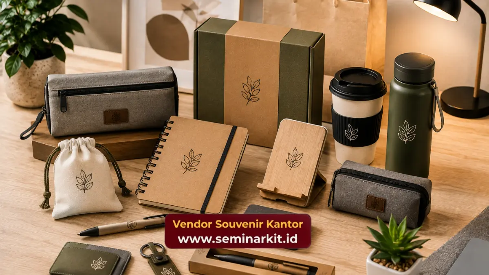

Jenis souvenir kantor dengan harga sekitar 100 ribu rupiah mencakup tumbler custom, notebook eksekutif, gift set alat tulis, tas kanvas, dan payung lipat dengan logo perusahaan. Kelima jenis ini dipilih karena menawarkan fungsi harian yang tinggi sekaligus tampilan yang tetap terlihat profesional. Pemilihan jenis yang tepat bergantung pada siapa penerima souvenir, apakah klien bisnis, mitra kerja, atau karyawan internal.
- Tumbler custom cocok sebagai souvenir fungsional yang dipakai berulang oleh penerima.
- Notebook eksekutif memberi kesan formal, ideal untuk klien dan peserta rapat.
- Gift set alat tulis praktis untuk dibagikan dalam jumlah besar ke karyawan.
- Tas kanvas custom populer sebagai goodie bag acara korporat berskala besar.
- vendorsouvenirkantor.web.id menyediakan seluruh jenis souvenir ini dengan opsi custom logo perusahaan.
Tumbler Custom Logo, Pilihan Fungsional untuk Segala Acara
Tumbler custom logo adalah salah satu jenis souvenir kantor paling populer pada budget seratus ribu rupiah karena fungsinya yang dipakai sehari-hari oleh penerima. Bahan stainless steel menjadi pilihan umum karena tahan lama dan memberi kesan premium meski harganya terjangkau.
Tumbler pada rentang harga ini biasanya memiliki kapasitas standar sekitar 350 hingga 500 mililiter dengan cetak logo satu warna menggunakan teknik cetak UV atau laser agar hasil lebih tajam dan tidak mudah pudar. Desain tumbler yang minimalis dengan warna netral seperti hitam, putih, atau silver cenderung lebih fleksibel digunakan untuk berbagai jenis acara, baik seminar internal maupun pertemuan dengan klien eksternal.
Karena dipakai berulang, tumbler custom logo memberi eksposur brand jangka panjang setiap kali digunakan penerimanya, baik di kantor, saat perjalanan, maupun di rumah.
Notebook Eksekutif, Souvenir dengan Kesan Formal
Notebook eksekutif dengan cover berbahan sintetis menyerupai kulit menjadi jenis souvenir kantor yang memberi kesan formal dan cocok untuk klien bisnis maupun peserta seminar tingkat manajerial. Pada budget seratus ribu rupiah, notebook jenis ini biasanya sudah dilengkapi dengan kertas berkualitas dan finishing rapi pada jahitan cover.
Custom logo pada notebook umumnya menggunakan teknik emboss atau debossing pada cover, memberikan kesan elegan tanpa tambahan warna cetak yang mencolok. Beberapa perusahaan juga memilih kombinasi notebook dengan pulpen dalam satu paket untuk memperkuat kesan profesional saat diberikan kepada klien atau mitra bisnis penting.
Notebook eksekutif juga cocok digunakan sebagai souvenir pelengkap acara formal seperti seminar, konferensi, atau kunjungan bisnis, karena fungsinya yang relevan dengan aktivitas kerja sehari-hari penerima.
Gift Set Alat Tulis, Praktis untuk Pembagian Massal
Gift set alat tulis yang berisi kombinasi notebook mini dan pulpen menjadi pilihan praktis ketika perusahaan perlu membagikan souvenir dalam jumlah besar, misalnya untuk seluruh karyawan pada acara tahunan atau seluruh peserta pelatihan internal. Kemasan yang ringkas membuat gift set jenis ini mudah didistribusikan tanpa memerlukan tempat penyimpanan besar.
Pada budget seratus ribu rupiah, gift set biasanya dikemas dalam box sederhana namun tetap rapi, dengan logo perusahaan tercetak pada kemasan maupun pada masing-masing item di dalamnya. Kombinasi ini memberikan kesan lengkap meski setiap komponennya berukuran kecil.
Jenis souvenir ini juga fleksibel untuk berbagai segmen penerima, baik karyawan internal, peserta workshop, maupun tamu undangan acara perusahaan berskala menengah.
Tas Kanvas Custom, Pilihan Populer untuk Goodie Bag
Tas kanvas dengan sablon logo perusahaan sering dipilih sebagai goodie bag pada acara korporat berskala besar seperti seminar, gathering, atau exhibition. Bahan kanvas yang kuat membuat tas ini dapat digunakan kembali oleh penerima untuk kebutuhan sehari-hari, sehingga memperpanjang masa eksposur logo perusahaan.
Sablon logo pada tas kanvas umumnya menggunakan teknik cetak yang efisien untuk pemesanan dalam jumlah besar, dengan pilihan warna kanvas yang bisa disesuaikan dengan identitas brand perusahaan. Ukuran tas yang cukup luas juga memungkinkan tas ini digunakan sebagai wadah untuk item souvenir lain di dalamnya saat acara berlangsung.
Tas kanvas custom menjadi pilihan yang tepat ketika perusahaan ingin memberikan kesan souvenir yang praktis sekaligus ramah lingkungan dibanding kemasan sekali pakai.

Payung Lipat Custom Logo, Souvenir dengan Nilai Fungsional Tinggi
Payung lipat dengan logo perusahaan termasuk jenis souvenir kantor yang memiliki nilai fungsional tinggi karena kebutuhannya yang cukup universal, terutama di Indonesia dengan intensitas hujan yang cukup sering di berbagai wilayah. Pada budget seratus ribu rupiah, payung lipat biasanya menggunakan rangka yang cukup kokoh dengan kain yang tahan air.
Logo perusahaan pada payung umumnya dicetak pada salah satu panel kain menggunakan teknik sablon, dengan posisi yang mudah terlihat saat payung terbuka. Karena sifatnya yang sering dibawa bepergian, payung custom logo memberikan eksposur brand yang cukup luas, termasuk saat digunakan penerima di luar lingkungan kantor.
Bagaimana Memilih Jenis Souvenir yang Tepat untuk Klien dan Karyawan?
Pemilihan jenis souvenir kantor sebaiknya disesuaikan dengan profil penerima, di mana klien bisnis umumnya lebih cocok dengan produk berkesan formal seperti notebook eksekutif, sementara karyawan internal bisa menerima produk yang lebih fungsional dan fleksibel seperti tumbler atau tas kanvas.
Beberapa pertimbangan tambahan dalam memilih jenis souvenir:
- Untuk klien bisnis dan mitra kerja, pilih produk dengan tampilan formal seperti notebook kulit sintetis atau tumbler dengan finishing premium.
- Untuk karyawan internal, produk fungsional seperti tumbler, tas kanvas, atau gift set alat tulis lebih fleksibel digunakan sehari-hari.
- Untuk acara luar ruangan atau musim hujan, payung lipat custom logo bisa menjadi pilihan yang relevan dan bernilai guna tinggi.
Kesesuaian jenis souvenir dengan profil penerima akan memperkuat kesan positif perusahaan sekaligus memastikan souvenir benar-benar digunakan, bukan hanya disimpan tanpa fungsi.
Pesan Berbagai Jenis Souvenir Kantor Budget 100 Ribu
Setelah mengetahui berbagai jenis souvenir kantor yang tersedia pada budget seratus ribu rupiah, langkah selanjutnya adalah memastikan produk yang dipilih benar-benar sesuai kebutuhan acara dan identitas perusahaan. vendorsouvenirkantor.web.id menyediakan pilihan tumbler, notebook, gift set, tas kanvas, hingga payung custom logo yang siap diproduksi sesuai kebutuhan korporat Anda.
Jenis souvenir kantor pada budget seratus ribu rupiah cukup beragam, mulai dari tumbler, notebook, gift set, tas kanvas, hingga payung custom logo, masing-masing dengan kelebihan dan kecocokan penerima yang berbeda. Untuk memesan jenis souvenir yang paling sesuai kebutuhan perusahaan Anda, kunjungi vendorsouvenirkantor.web.id dan konsultasikan langsung dengan tim yang berpengalaman.

Banner promosi: klik gambar untuk langsung terhubung ke WhatsApp tim sales.